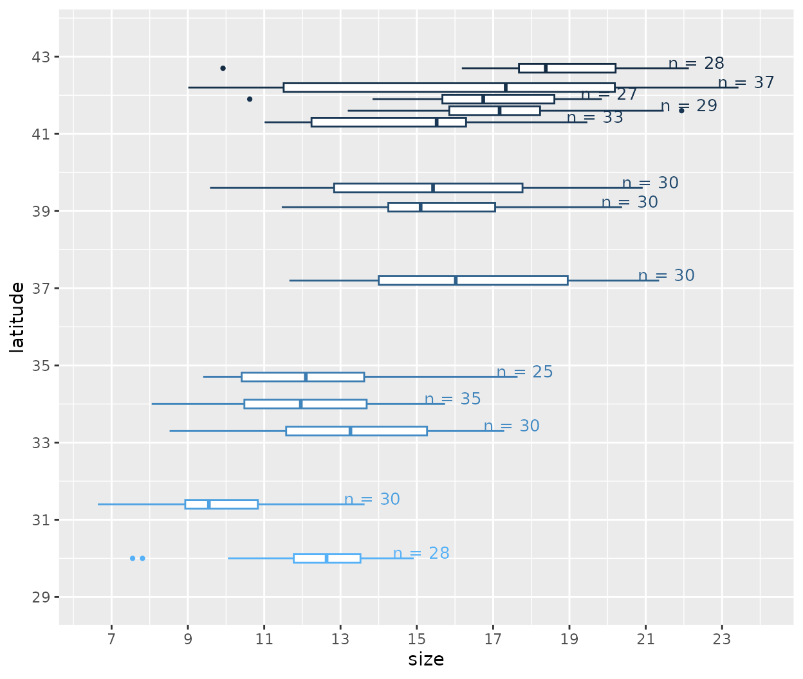
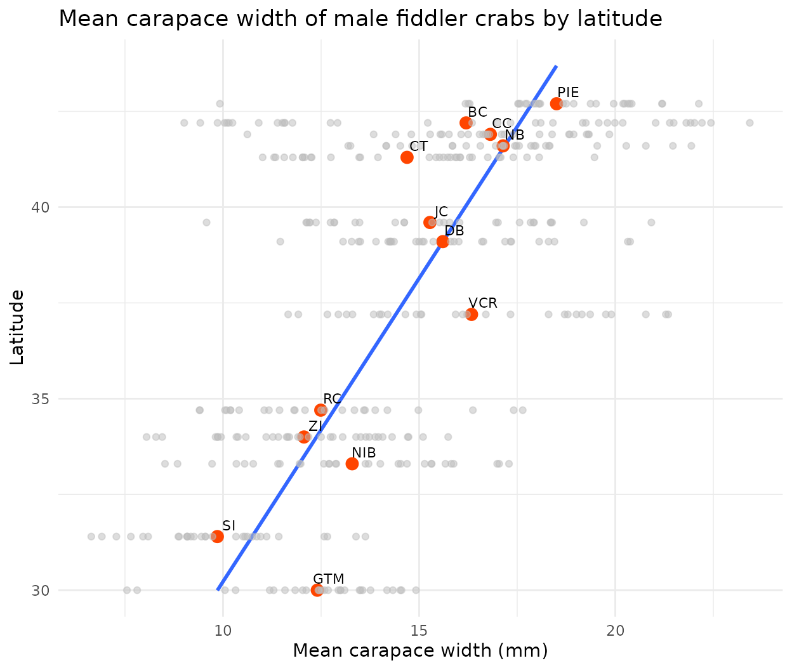

pie_crab - Plum Island Ecosystem LTER fiddler crabs (PIE)
Fiddler crab body size in salt marshes from Florida to Massachusetts, USA during summer 2016 at Plum Island Ecosystem LTER
Source:vignettes/articles/pie_crab_vignette.Rmd
pie_crab_vignette.RmdIntroduction
The Atlantic marsh fiddler crab, Minuca pugnax (formerly Uca pugnax), lives in salt marshes throughout the eastern coast of the United States. Historically, M. pugnax were distributed from northern Florida to Cape Cod, Massachusetts, but like other species have expanded their range northward due to ocean warming.
The pie_crab data sample is from a study by Johnson and
colleagues at the Plum Island Ecosystem Long Term Ecological Research
site. Here, we use the data to explore Bergmann’s rule:
“One of the best-known patterns in biogeography is Bergmann’s rule. It predicts that organisms at higher latitudes are larger than ones at lower latitudes. Many organisms follow Bergmann’s rule, including insects, birds, snakes, marine invertebrates, and terrestrial and marine mammals. What drives Bergmann’s rule? Bergmann originally hypothesized that the organisms he studied, birds, were larger in the colder, higher latitudes due to heat-conservation. But the heat-conservation hypothesis relies on internal regulation of body temperature and therefore does not apply to ectotherms, some of which also follow Bergmann’s rule. There is likely no universal mechanism underpinning Bergmann’s rule, regardless of ecto- or endothermy. As a result, other mechanisms have been proposed to explain Bergmann’s rule, including the starvation-resistant hypothesis, the diet-quality hypothesis, the enemy hypothesis, the resource rule, seasonality hypothesis, and the temperature–size rule (Johnson et al., 2019).”

Data sampling overview:
- 13 marshes were sampled on the Atlantic coast of the United States in summer 2016
- Spanning > 12 degrees of latitude, from northeast Florida to northeast Massachusetts
- Between 25 and 37 adult male fiddler crabs were collected, and their sizes recorded, from each marsh between 2016-07-24 and 2016-08-13
Data Exploration
## ── Attaching core tidyverse packages ──────────────────────── tidyverse 2.0.0 ──
## ✔ dplyr 1.1.1 ✔ readr 2.1.4
## ✔ forcats 1.0.0 ✔ stringr 1.5.0
## ✔ ggplot2 3.4.1 ✔ tibble 3.2.1
## ✔ lubridate 1.9.2 ✔ tidyr 1.3.0
## ✔ purrr 1.0.1
## ── Conflicts ────────────────────────────────────────── tidyverse_conflicts() ──
## ✖ dplyr::filter() masks stats::filter()
## ✖ dplyr::lag() masks stats::lag()
## ℹ Use the conflicted package (<http://conflicted.r-lib.org/>) to force all conflicts to become errorsLatitude and water temperature
ggplot(data = pie_crab, aes(y = latitude, x = water_temp)) +
geom_point()Generally, water temperature within the study range decreases toward lower latitudes.
Summary Statistics
crab_stats <- pie_crab %>% group_by(latitude, site) %>%
summarise(
n = n(),
mean_mm = mean(size),
min_mm = min(size),
max_mm = max(size),
sd_mm = sd(size),
median_mm = median(size)
) ## `summarise()` has grouped output by 'latitude'. You can override using the
## `.groups` argument.
crab_stats## # A tibble: 13 × 8
## # Groups: latitude [13]
## latitude site n mean_mm min_mm max_mm sd_mm median_mm
## <dbl> <chr> <int> <dbl> <dbl> <dbl> <dbl> <dbl>
## 1 30 GTM 28 12.4 7.55 14.9 1.80 12.6
## 2 31.4 SI 30 9.85 6.64 13.6 1.79 9.55
## 3 33.3 NIB 30 13.3 8.52 17.3 2.42 13.3
## 4 34 ZI 35 12.1 8.05 15.7 2.01 12.0
## 5 34.7 RC 25 12.5 9.4 17.6 2.34 12.1
## 6 37.2 VCR 30 16.3 11.7 21.4 2.94 16.0
## 7 39.1 DB 30 15.6 11.5 20.4 2.12 15.1
## 8 39.6 JC 30 15.3 9.58 20.9 2.72 15.4
## 9 41.3 CT 33 14.7 11.0 19.5 2.36 15.5
## 10 41.6 NB 29 17.1 13.2 21.9 2.29 17.2
## 11 41.9 CC 27 16.8 10.6 19.8 2.05 16.7
## 12 42.2 BC 37 16.2 9.01 23.4 4.81 17.3
## 13 42.7 PIE 28 18.5 9.92 22.1 2.30 18.4Crab size boxplot (by site latitude)
Here, we create a boxplot of crab carapace size (mm) by latitude. Generally, crab sizes increase toward higher latitudes, following Bergmann’s rule.
pie_crab %>%
ggplot(aes(y=latitude)) +
geom_boxplot(aes(size, group = latitude, color=-latitude), outlier.size=0.8) +
geom_text(data = crab_stats,
aes(label = (paste('n =', n)),
group = latitude,
color = -latitude,
x= max_mm + 0.2,
y= latitude + 0.15),
size=3.5) +
scale_x_continuous(breaks = seq(from = 7, to = 23, by = 2), limits = c(6.5,24))+
scale_y_continuous(breaks = seq(from = 29, to = 43, by = 2), limits = c(29, 43.5)) +
theme(legend.position= "none") 
crab_summary <- pie_crab %>% group_by(site, latitude) %>%
summarise(
mean_size = mean(size)
) %>% ungroup()## `summarise()` has grouped output by 'site'. You can override using the
## `.groups` argument.Simple Linear Regression
Mean size (by site latitude)
Another graph of carapace size (mm) by site latitude is below, with mean sizes recorded for each site shown as red dots (all observations included as light gray dots), revealing an approximately linear relationship between mean carapace size and latitude.
ggplot(data = crab_summary, aes(y = latitude, x = mean_size)) +
geom_point() +
geom_smooth(method = "lm", se = FALSE) +
geom_point(color = "orangered1", size=3) +
geom_point(aes(x = size, y = latitude), data = pie_crab, color = "gray", alpha = 0.5) +
geom_text(aes(label = site), nudge_x = 0.3, nudge_y = 0.3, size=3) +
labs(y = "Latitude",
x = "Mean carapace width (mm)",
title = "Mean carapace width of male fiddler crabs by latitude") +
theme_minimal()## `geom_smooth()` using formula = 'y ~ x'
Bergmann’s rule - further exploration
Our visual exploration seems to follow Bergmann’s rule. Here, we use simple linear regression to explore the relationship between crab size and latitude a bit more (only using latitude as a predictor variable - note that further exploration can be done using alternate or additional variables in the dataset):
# Linear model:
crab_size_model <- lm(size ~ latitude, data = pie_crab)
# Return model summary output:
summary(crab_size_model)##
## Call:
## lm(formula = size ~ latitude, data = pie_crab)
##
## Residuals:
## Min 1Q Median 3Q Max
## -7.8376 -1.8797 0.1144 1.9484 6.9280
##
## Coefficients:
## Estimate Std. Error t value Pr(>|t|)
## (Intercept) -3.62442 1.27405 -2.845 0.00468 **
## latitude 0.48512 0.03359 14.441 < 2e-16 ***
## ---
## Signif. codes: 0 '***' 0.001 '**' 0.01 '*' 0.05 '.' 0.1 ' ' 1
##
## Residual standard error: 2.832 on 390 degrees of freedom
## Multiple R-squared: 0.3484, Adjusted R-squared: 0.3467
## F-statistic: 208.5 on 1 and 390 DF, p-value: < 2.2e-16The fiddler crab does appear follow Bergmann’s rule. On average, carapace width increased by 0.5 mm for every degree increase in latitude, and latitude significantly predicts crab size.
Conclusion and further exploration
In summary, from initial visual exploration and simple linear regression examples here, M. pugnax appears to follow Bergmann’s rule, with crab size increasing in salt marshes at higher latitudes.
Further analysis might include:
- Multiple linear regression, including other variables (air temperature, water temperature, and/or standard deviations of both as a metric for seasonality)
- Statistical analyses of size difference between sites (e.g. by ANOVA, or t-tests if only comparing 2 sites)
Citation
Johnson, D. 2019. Fiddler crab body size in salt marshes from Florida to Massachusetts, USA at PIE and VCR LTER and NOAA NERR sites during summer 2016. ver 1. Environmental Data Initiative. https://doi.org/10.6073/pasta/4c27d2e778d3325d3830a5142e3839bb (Accessed 2021-05-27).
Johnson DS, Crowley C, Longmire K, Nelson J, Williams B, Wittyngham S. The fiddler crab, Minuca pugnax, follows Bergmann’s rule. Ecol Evol. 2019;00:1–9. https://doi.org/10.1002/ece3.5883
How we processed the raw data
Download the raw data from EDI.org
library(tidyverse)
library(lubridate)
library(janitor)
library(usethis)
library(metajam)
pie_url <- "https://portal.edirepository.org/nis/dataviewer?packageid=knb-lter-pie.540.1&entityid=bab5a4d6df7dce829a222f281cca55a5" # Save link location for the data package:
pie_download <- download_d1_data(data_url = pie_url, path = tempdir(), dir_name="pie") # Download the data package with metajamData cleaning
# Read in data
pie_files <- read_d1_files(pie_download)
pie_data <- pie_files$data
# Basic cleaning
pie_crab <- pie_data %>%
janitor::clean_names() %>%
select(-replicate) %>%
left_join(pie_files$factor_metadata[, 0:2], by = c("site" = "code")) %>%
rename("name" = "definition",
"size" = "carapace_width",
"air_temp" = "mata",
"water_temp" = "matw",
"air_temp_sd" = "sata",
"water_temp_sd" = "satw")